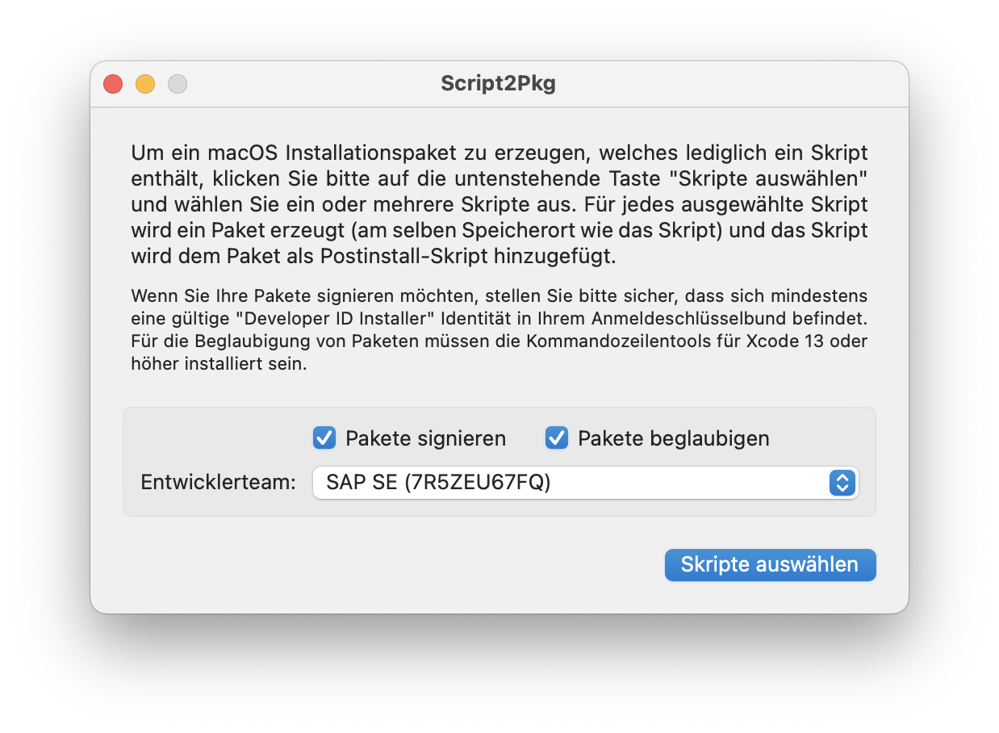
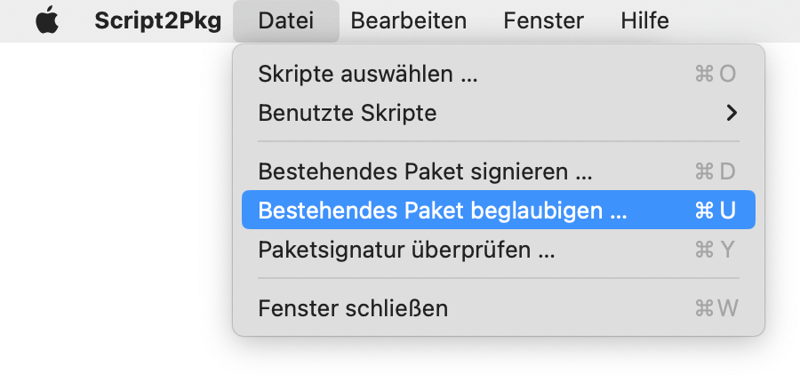
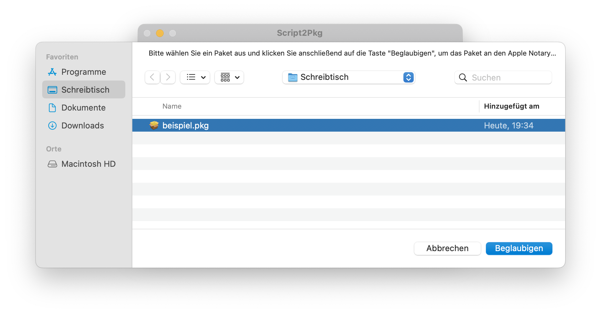
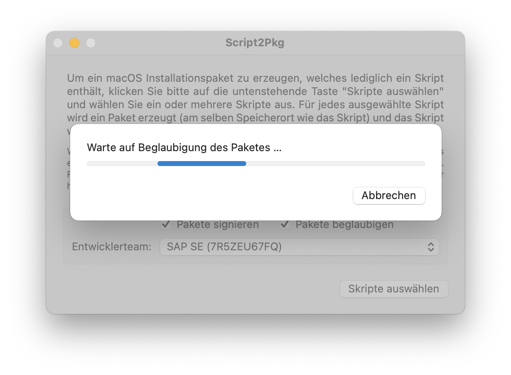
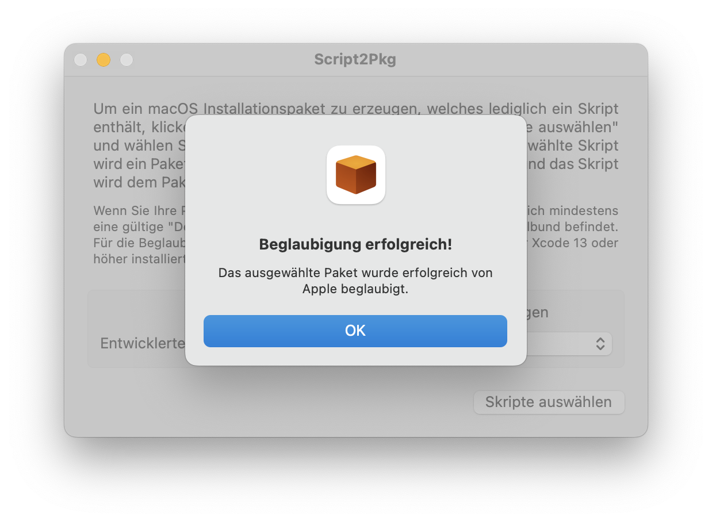

Script2Pkg
Script2Pkg
Script2Pkg
Bestehende Pakete beglaubigen
The app is able to notarize existing packages. Once you have an installer package you want to notarize, please use the procedure below:
1. Starten Sie die Anwendung.
2. Vergewissern Sie sich, dass die Optionen Pakete signieren und Pakete beglaubigen aktiviert sind.

3. Wählen Sie im Menü Datei den Menüpunkt Bestehendes Paket beglaubigen … aus.

4. Wählen Sie ein Paket aus und klicken Sie die Taste Beglaubigen .

Die Beglaubigung eines Paketes (speziell eines sehr großen) kann etwas Zeit benötigen …

5. Script2Pkg meldet zurück, ob das Paket erfolgreich beglaubigt wurde.
